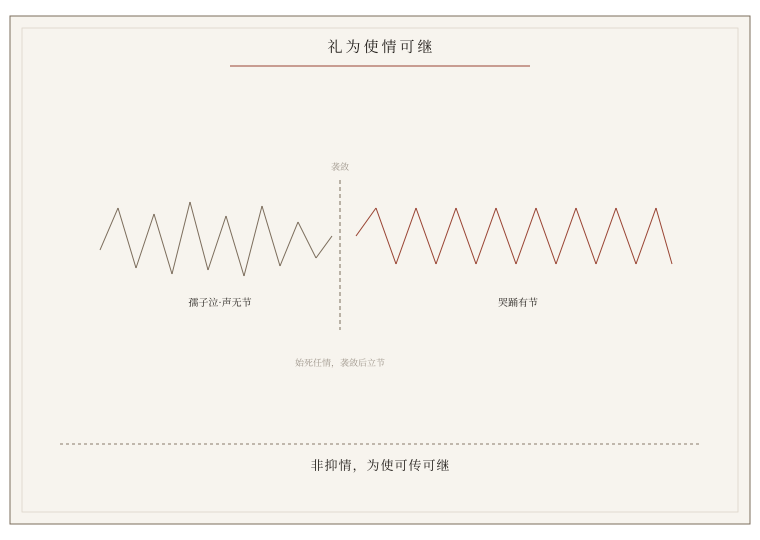

檀弓上 · 三·六十五 · 第 268 课
弁人有其母死而孺子泣者。孔子曰：「哀則哀矣，而難為繼也。夫禮，為可傳也，為可繼也，故哭踊有節。」
说什么事：一个人死了母亲，哭得像婴儿。孔子说，哀是哀了，可别人接不上。礼是要能传下去、能被人接续的，所以哭和踊都有节。
落在哪一层：礼，兼及礼数与礼意。论「礼为使情可继」。
为何编在此位：上节以言止人之欲，此节以节止人之情。一言一情，皆论「过」之不可。
【经】弁人有其母死而孺子泣者。孔子曰：「哀則哀矣，而難為繼也。夫禮，為可傳也，為可繼也，故哭踊有節。」
【注】言声无节。此诚哀。失礼中。
【疏】此一节论孔子讥弁人哀过之事。「而难为继也」者，此哀之深，后人无能继学之者也。「夫礼，为可传也，为可继也，故哭踊有节」者，又广述其难继为失也：夫圣人礼制，使后人可传可继，故制为哭踊之节，以中为度耳，岂可过甚，皆使后人不可传继乎？然《杂记》「曾申问于曾子曰：哭父母有常声乎？曰：中路婴儿失其母，何常声之有？」则与此违者：曾子所言，是始死之时，悲哀志懑，未可为节；此之所言，在袭敛之后，可以制礼，故哭踊有节也。所以知然者，曾申之问泛问于哭时，故知举重时答也；此之所言哭踊有节，节哭之时，在于后也。
弁人 弁地之人。注「弁，皮彦反」，地名。
孺子泣 像婴儿那样哭。注「言声无节」。
哀则哀矣 哀是哀了。先许其情。
难为继 后人难接续。疏「后人无能继学之者」。
可传 可以传之后人。
可继 可以继之他人。
哭踊有节 哭与踊皆有节度。
失礼中 失礼之「中」。中，度。
弁地有个人死了母亲，哭得像婴儿一样。孔子说：「哀是哀了，可难以为继。礼这个东西，是要能传下去、能被人接续的，所以哭和踊都有节度。」
孔子先许其哀，再责其无节。「哀则哀矣」四字不可省：礼不否定情，只替情找一个别人也能走的路。
「可传」「可继」是全节之骨。可传，是对时间说：这一套后人能接。可继，是对旁人说：这一套他人能学。凡不可传不可继的，虽极真诚，也只是一人之事，不能成为礼。
故礼之节，不是限情，是为情开路：把「哭得像婴儿」变作「哭有常声」，让后来的人有路可走，不至于望而生退。
第一层 先许后责 孔子不说「非礼」，说「哀则哀矣，而难为继也」。此为《檀弓》评人之常法：先认其情，再论其节。认情，则言不入于刻；论节，则言不流于滥。
第二层 礼的两项功能 「为可传也，为可继也」。传者，纵向；继者，横向。一条礼要同时通过这两项检验：后人接得住，旁人学得来。此即礼之「公共性」。哭踊之节，正是为通过这两项而设。
第三层 始死与袭敛之后 疏举《杂记》曾申之问与曾子之答「中路婴儿失其母，何常声之有」，与本文似相违。疏解之曰：曾子所言是始死之时，悲哀志懑，未可为节；此所言在袭敛之后，可以制礼。同一句「哭」，前后两个时段的尺不同。此为《檀弓》中最精细的一处「时」的分别。
第四层 孺子泣 注「言声无节」。婴儿之哭，无起无收，一直到底。成年人若如此，则旁人无从陪哭——不是不好听，是无法「同哭」。礼要的是「同哭」，不是「独哭」。
与今日何干 凡以「真诚」为名的极端，都会让后来的人接不上。一个团队里有人以命相拼，其余人只能旁观；一场追悼有人哭到不能起，亲友只能尴尬。礼在此的作用，不是压低真诚，是把真诚做成可接的东西。
| 左 | 右 |
|---|---|
| 孺子泣 | 声无节 |
| 哀则哀矣 | 先许其情 |
| 难为继 | 后人接不上 |
| 可传 | 纵向：后人能接 |
| 可继 | 横向：旁人能学 |
| 哭踊有节 | 以中为度 |
| 始死任情 | 未可为节 |
| 袭敛后立节 | 可以制礼 |
画一间丧次的内外，视点平。内室一人伏地而哭，肩背起伏大、衣裾散乱；旁边两位亲友站着，一人伸手欲扶又止，一人侧身避开。堂上案边坐着一位老者（孔子，深衣、手按膝），面前一案放着一卷礼书。不写文字、不画人面细节。赭色只用在伏地者散开的衣裾一角与老者案上那卷书的一根绳。
